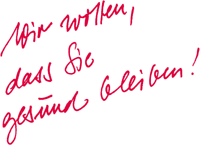

| Region Nord |
| Hildesheimer Str. 309 |
| 30519 Hannover |
| Tel.: 0511 987-2544 |
| Fax: 0511 987-2550 |
| amd-nord@amd.bgbau.de |
| Region Mitte |
| Hofkamp 84 |
| 42103 Wuppertal |
| Tel.: 0202 398-5118 |
| Fax: 0800 668 66 88 23-815 |
| amd-mitte@amd.bgbau.de |
| Bezirk Süd |
| Landsberger Straße 309 |
| 80687 München |
| Tel.: 089 8897-903 |
| Fax: 089 8897-779 |
| amd-sued@amd.bgbau.de |
IMPRESSUM |
Herausgeber und Copyright: Berufsgenossenschaft der Bauwirtschaft Hildegardstraße 29/30 10715 Berlin Internet: www.amd.bgbau.de E-Mail: info@amd.bgbau.de Gestaltung: H.ZWEI.S Werbeagentur GmbH Plaza de Rosalia 2 30449 Hannover Überarbeitete Auflage 2019 Abruf-Nr. 717 |